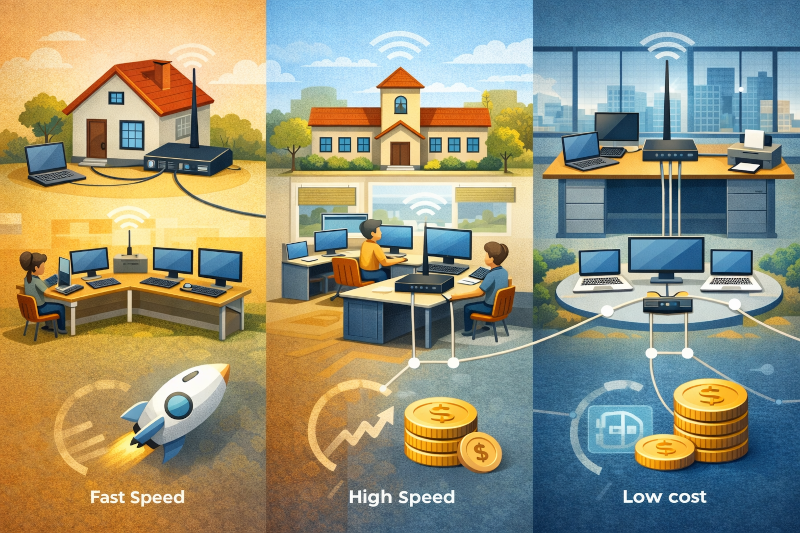
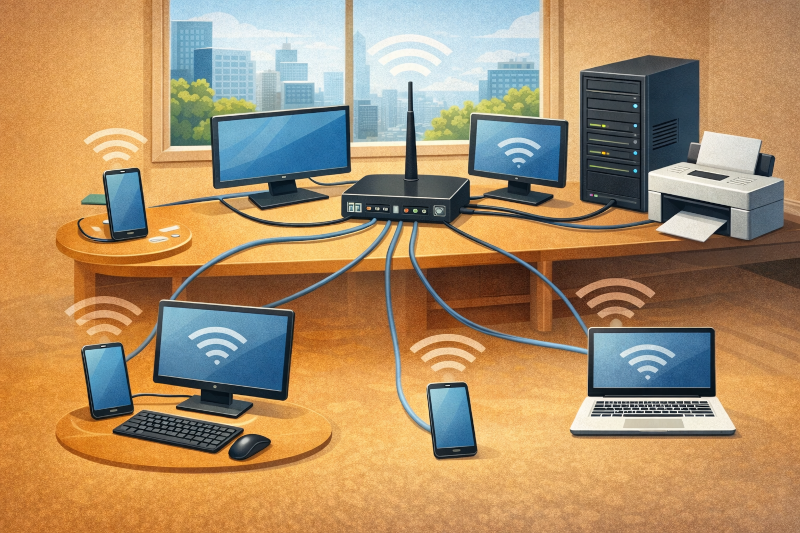
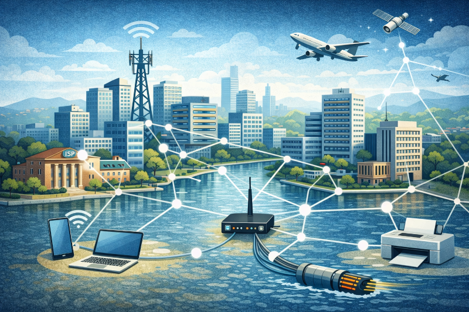
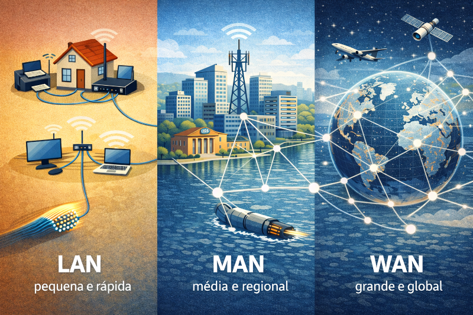

Tipos de Rede são categorias de redes de computadores definidas pelo tamanho da área geográfica
que elas cobrem e pela distância entre os dispositivos conectados.
Essa classificação ajuda a entender se a rede é usada em um ambiente pequeno, como uma casa ou
escritório, ou em áreas maiores, como cidades ou até o mundo inteiro (Internet).

LAN – Local Area Network
LAN (Local Area Network) é uma rede local utilizada em ambientes pequenos, como casas, escolas e
escritórios.
Ela conecta dispositivos próximos entre si, oferecendo alta velocidade de comunicação, baixa
latência e custo reduzido, sendo ideal para compartilhamento de arquivos, internet e
impressoras..
✔ Casas
✔ Escolas
✔ Escritórios
Alta velocidade e baixo custo.

Exemplo de LAN
Um exemplo de LAN é quando computadores, celulares e notebooks estão conectados ao mesmo
roteador, seja por cabo de rede ou Wi-Fi.
Nessa rede, também podem estar impressoras e servidores locais, permitindo o compartilhamento de
arquivos, internet e dispositivos dentro do mesmo ambiente.

MAN – Metropolitan Area Network
MAN (Metropolitan Area Network) é uma rede que abrange uma cidade ou região metropolitana,
conectando várias redes menores (LANs).
Ela é usada por provedores de internet, órgãos públicos e grandes empresas, permitindo
comunicação e compartilhamento de dados em longas distâncias dentro da área urbana.
WAN – Wide Area Network
WAN (Wide Area Network) é uma rede de longa distância, capaz de conectar dispositivos e redes em
países e continentes diferentes.
Ela utiliza links de comunicação como fibra óptica, satélites e cabos submarinos.
A Internet é o maior e mais conhecido exemplo de WAN, ligando redes do mundo inteiro..

Comparação
LAN → pequena e rápida
MAN → média e regional
WAN → grande e global